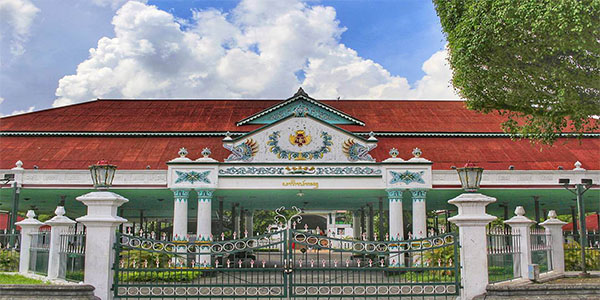

Karaton Ngayogyakarta Hadiningrat

Gedhong Kaca, Museum Hamengkubuwana IX Kraton Ngayogyakarta Hadiningrat
Kraton Ngayogyakarta Hadiningrat dipunadegaken déning Pangéran Mangkubumi. Madegipun Kraton Ngayogyakarta dipuwiwiti saking kadadosan nalika dipunawotenaken Perjanjian Giyanti ingkang wosipun inggih punika Krajan Mataram dipunpérang dados kalih inggih punika Kraton Kasunanan Surakarta saha Kraton Kasultanan Ngayogyakarta. Sasampunipun madegkaken Kraton Mataram Ngayogyakarta Pangéran Mangkubumi gadhah gelar Sri Sultan Hamengkubuwana I. Raja-raja Kasultanan Ngayogyakarta inggih punika wiwit saking Sri Sultan Hamengkubuwana I dumugi Sri Sultan Hamengkubuwana X. Sri Sultan Hamengkubuwana X taksih dados raja dumugi sapunika. Kraton Kasultanan Ngayogyakarta gadhah fungsi minangka pusat pamaréntahan, saha dalemipun raja sarta kulawarganipun. kajawi saking punika Kraton Kasultanan Ngayogyakarta dados pusat kabudayan wonten ing tanah Jawi.
Senaos kasultanan kasebat kanthi resmi sampun dados péranganing Républik Indonésia ing taun 1950, komplèks yasan kraton punika taksih gadhah fungsi minangka papan panggènan sultan lan rumah tangga istananéipun ingkang taksih nguri-uri tradhisi kasultanan ngantos sapriki. Kraton punika ugi dados salah satunggiling objek wisata ing Kitha Yogyakarta. Sapérangan komplèks kraton wujud musiyum ingkang nyimpen rupi-rupiu kolèksi gadhah kasultanan, kalebet peparing saking mancanegari ing antawisipun saking raja-raja Éropah, réplika pusaka kraton, lan gamelan.
Saking wujud bangunanipun, kraton punika wujud salah satunggaling tuladha arsitèktur pura Jawa ingkang paling saé, gadhah balairung-balairung mewah sarta lapangan paviliun ingkang jembar.[1]
Kraton Yogyakarta wiwit madeg déning Sultan Hamengkubuwana I sawatawis wulan sasampunipun Prejanjèn Giyanti ing taun 1755. Lokasi kraton punika kacariyos tilas pesanggarahan[2] ingkang katelah Garjitawati. Pesanggrahan punika dipun-ginakaken kangé istirahat iring-iringan jenazah raja-raja Mataram (Kartasura lan Surakarta) ingkang badhé kasarèkaken ing Imogiri. Versi sanès nyebataken bilih lokasi kraton wujud sendhang, Umbul Pacethokan, ingkang wonten ing satengahing wana Beringan. Sadèrèngipun dados Kraton Yogyakarta, Sultan Hamengku Bawana I manggèn wonten ing Pesanggrahan Ambar Ketawang ingkang sapunika kalebet wewengkon Kacamatan Gamping Kabupatèn Sléman[3].
Sacara fisik pura para Sultan Yogyakarta gadhah pitu komplèks inti inggih punika Siti Hinggil Lèr, Kamandhungan Lèr, Sri Manganti, Kedhaton, Kamagangan, Kamandhungan Kidul, lan Siti Hinggil Kidul[4]. Sanèsipun punika Kraton Yogyakarta gadhah rupi-rupi warisan budaya ingkang awangun adicara lan barang-barang kina mawisajarah. Kraton Yogyakarta uga wujud satunggaling lembaga adat pepak lan pemangku adatipun.